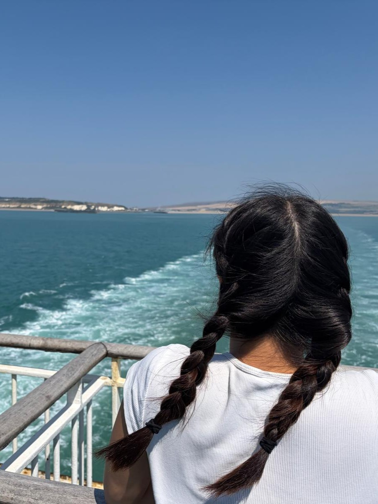
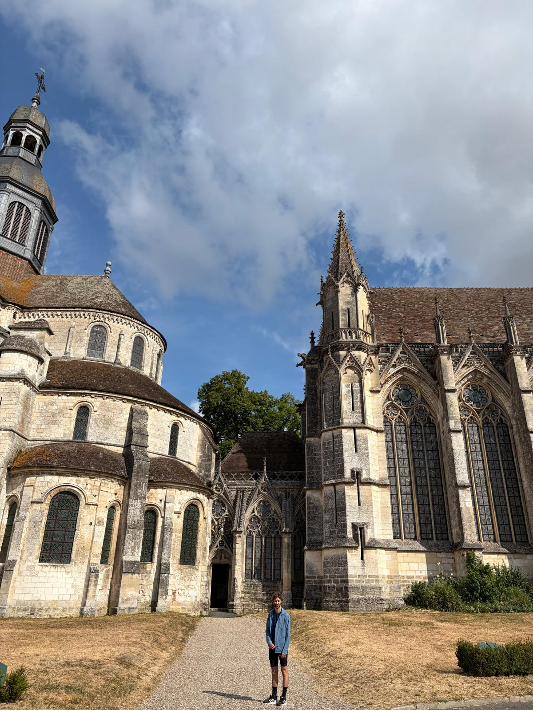
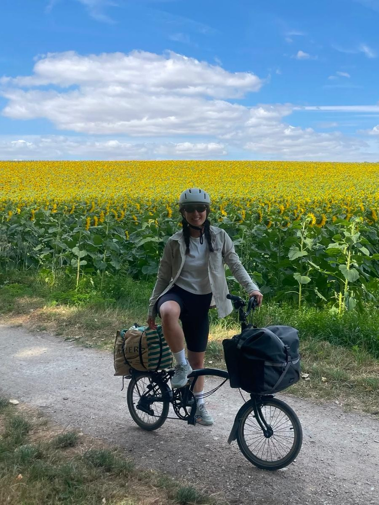
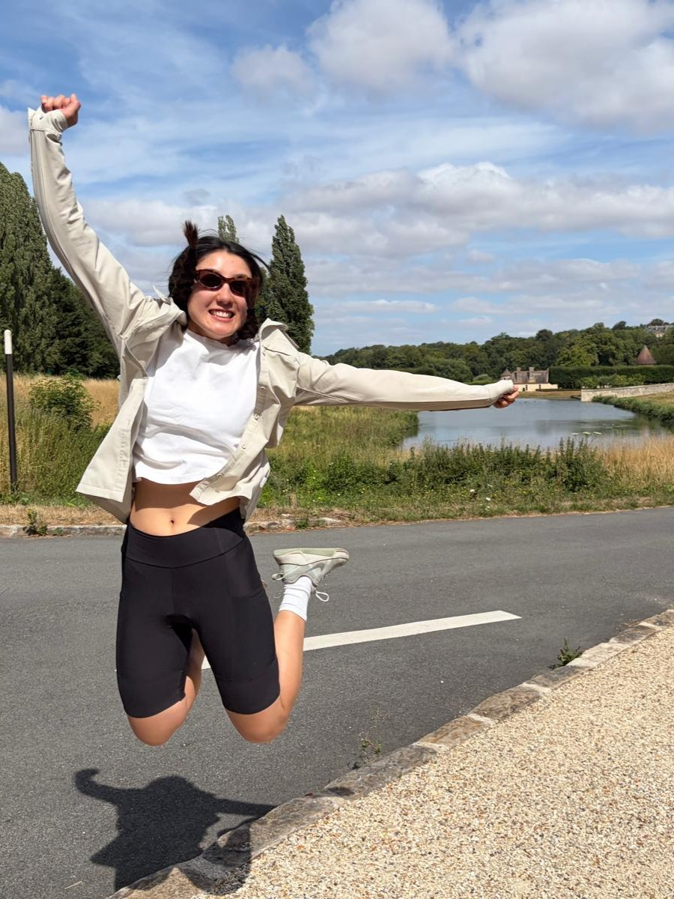
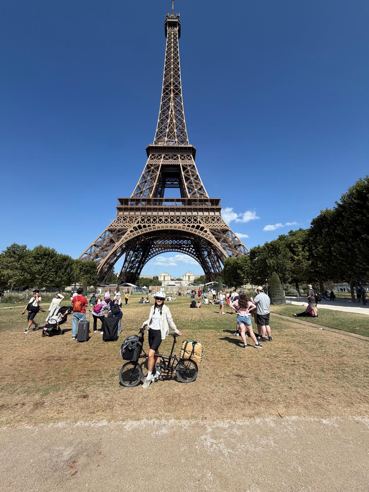
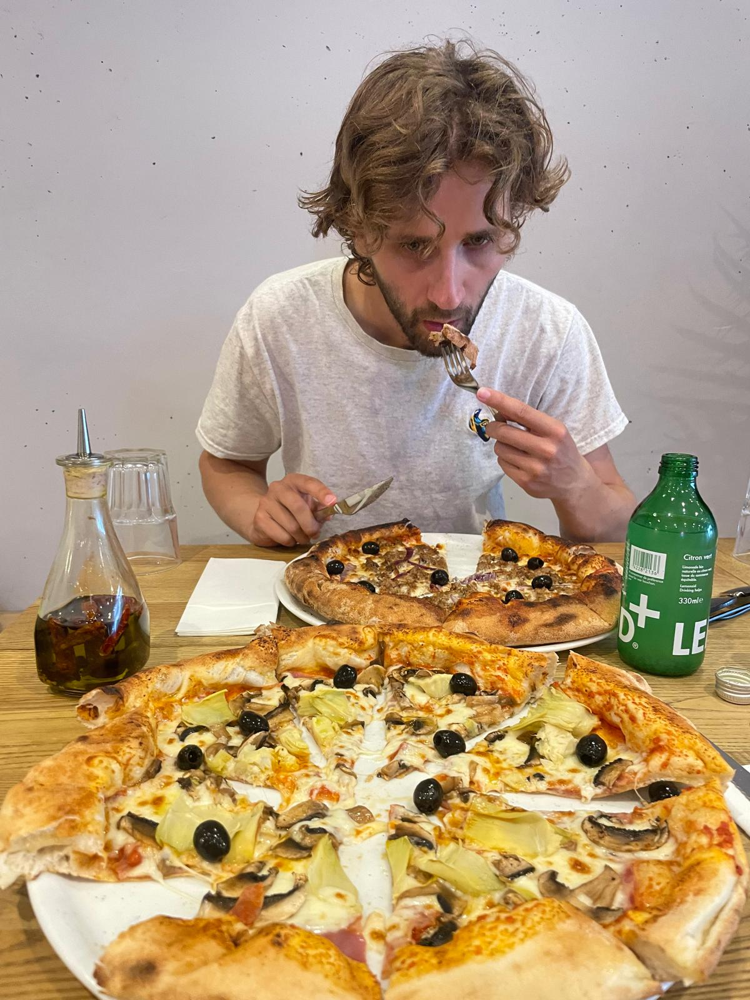
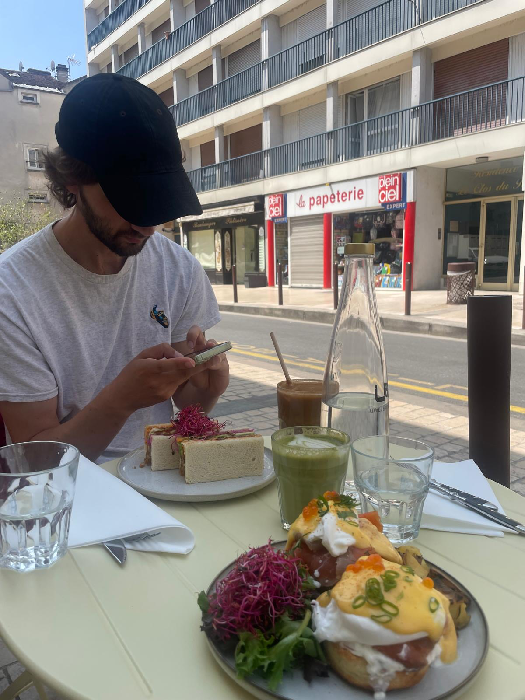
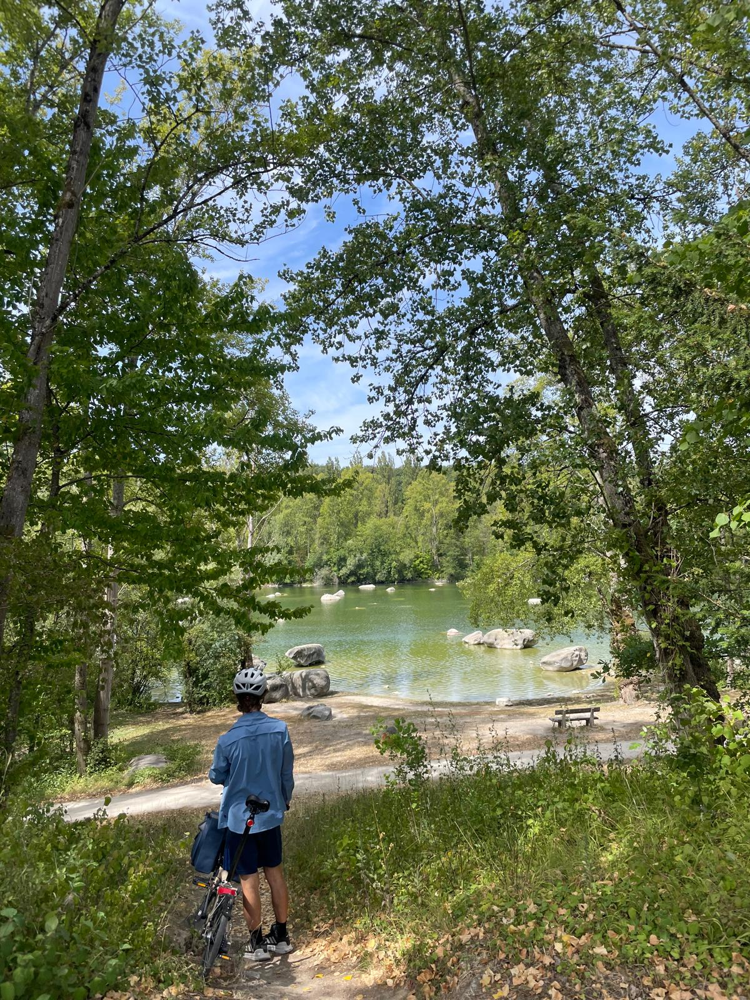
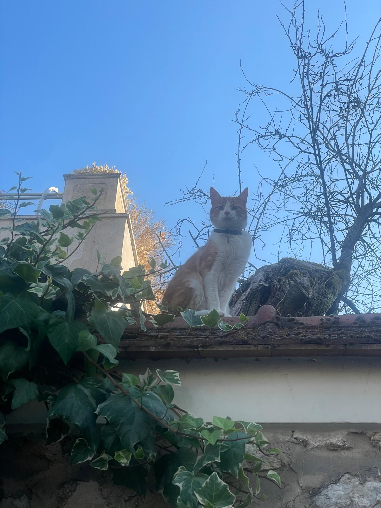

17th July 2026
We started off on the train down to New Haven to hop on the ferry to Dieppe. We were running slightly late and were worried we wouldn't make the ferry! Nonetheless we made it and were treated to a beautiful ferry ride with clear blue skies. 4 hours later we were putting on our cycling shorts and gearing up for our first leg of 40km to Neufchatel en Bray. The path was awseome! Relatively flat, quiet and beautiful countryside. We arrived to the town and found that a famous french chef was holding an event. We came down in our bicycle gear for canapes, sat down at a table with some Germans and Britons and proceeded to eat an 11 course meal ending almost at midnight!

18th July 2026
Onto the next a 55km day was coming up ending in Saint Germer de Fly. We stopped off for lunch in Forges les Eaux and grabbed lunch at an interesting viking spot with surprisingly good food. Most of the day was spent on these beautiful quiet cycleways which were famously used for the Tour de France. Along the way we saw fields of corn and flax. Apparently this section of Europe is known for the flax because in combines the right environmental conditions to grow and then air dry the flax to make it easy to process.

19th July 2026
Our biggest day for the whole trip was an 80km ride from Saint Germer de Fly down just past Bray et Lu. We started out the morning with some classic french pastries, Normandy is known for their apples so we had to go with an appple tart. We passed by many stunning gothic churches and buildings, not least of all the Cathedral of Saint Germer de Fly and stopping off for lunch at the Chateau de Gisors. It was our first taste of the sunflowers which we were about to be bombarded with. While we were in the area, we took a detour to Giverny, discovering the famous gardens of Claude Monet. The garden had such a variety of flowers and the pond was stunning, you could really visualise the scene from his paintings. For dinner I tried the pigeon delicacy (which I probably wont have ever again) and we watched the world cup final while nursing our aching bodies.

20th July 2026
The penultimate day of cycling took us 60km closer to Paris but remaining in the outskirts in a town called Bezons. We started off in small quaint towns and countryside, flanked by welcome sunflowers at times. We saw massive estates, including the Villarceaux Estate, the Chateau de Themericourt and Maisons-Laffitte Castle. Although the day wasn't without troubles, some off road antics combined with strong winds made for a challengin ride, but visits to beautiful horses and a picnic under a shady tree rejuvinated us.

21st July 2026
We did the final 25km journey into the heart of Paris, pasasing by the bumpy roads surrounding theArc de Triomph and the Eiffel Tower. Although we were over the moon that we had completed over 250km of cycling, we missed the quiet and expanse of the countryside as we rode through the hustle and bustle of Paris. Despite that, we did make the most of the city by visiting the Notre Dame, one of my favourite buildings in the world, and hopped on the train to our next stop, Fontainebleau.

22nd July 2026
Unfortunately, fires had been ravaging the area, including Fontainebleau and while we were there, we could not explore the forest and do any bouldering. While we were disappointed, we understood the need to prioritize safety and we had already had our fun in the forest the year before so we felt comfortable doing other activities. A lot of the other activities included recovering on the couch and watching Avatar: The Last Airbender while scoffing down food but we felt we had earned that after our cycling trip...

23rd July 2026
We decided to satiate our climbing itch by going to an indoor bouldering gym instead. A short ride took us to a quiet but beautifully set up gym where we had an enjoyable time.

24th July 2026
Deciding that we had rested enough (in hindsight, maybe one day was not enough rest!) we decided to do another cycle trip. We followed the Seine and although there were no major landmarks it was a beautiful ride.

25th July 2026
REST DAY!!!!!

26th July 2026
We thankfully had no issues getting back to Paris on the train and then cycling over the Gare du Nord to hop on our Eurostar train back into London. Before we left though we picked up some classic French pastries to eat on the train, another hard earned reward!